A Nextflow plugin that turns each run into generative art. When the run ends, it draws its tasks as an SVG or PNG, from their timing, memory and status only.
plugins {
id 'nf-arts@1.0.0'
}Every style
The same run, the nf-core/rnavar megatest (553 tasks), in each style.

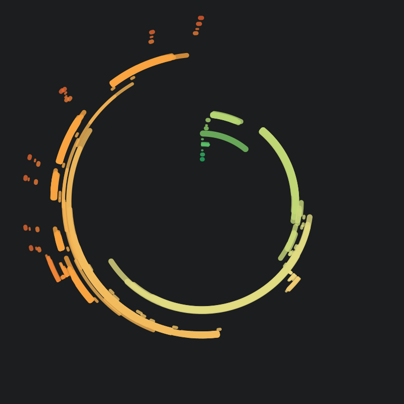

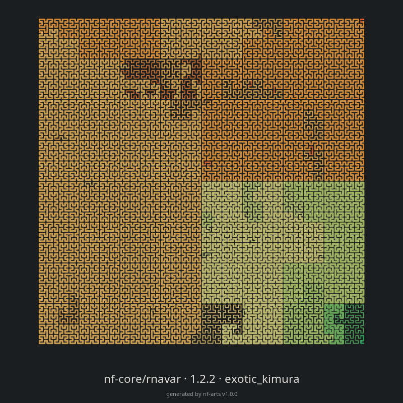

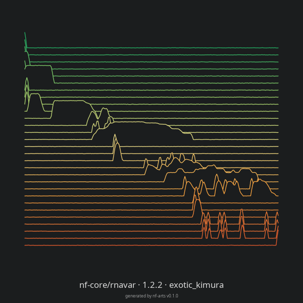

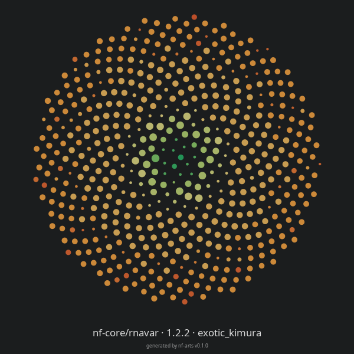

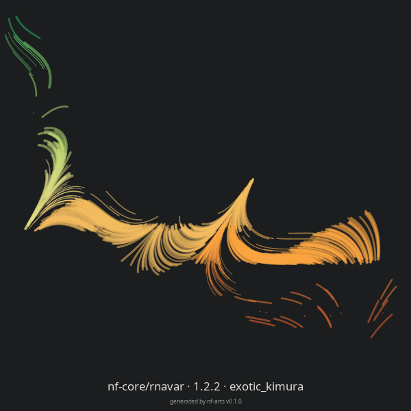

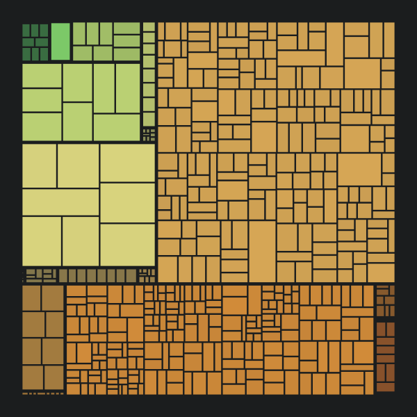

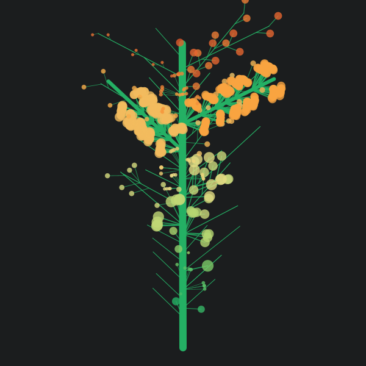

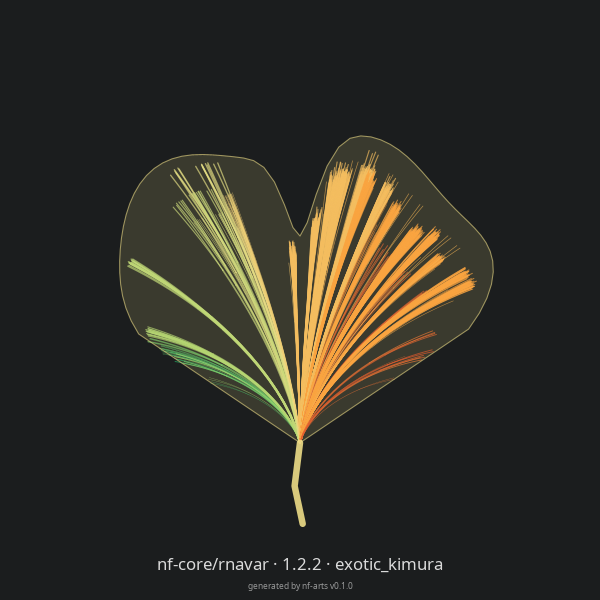

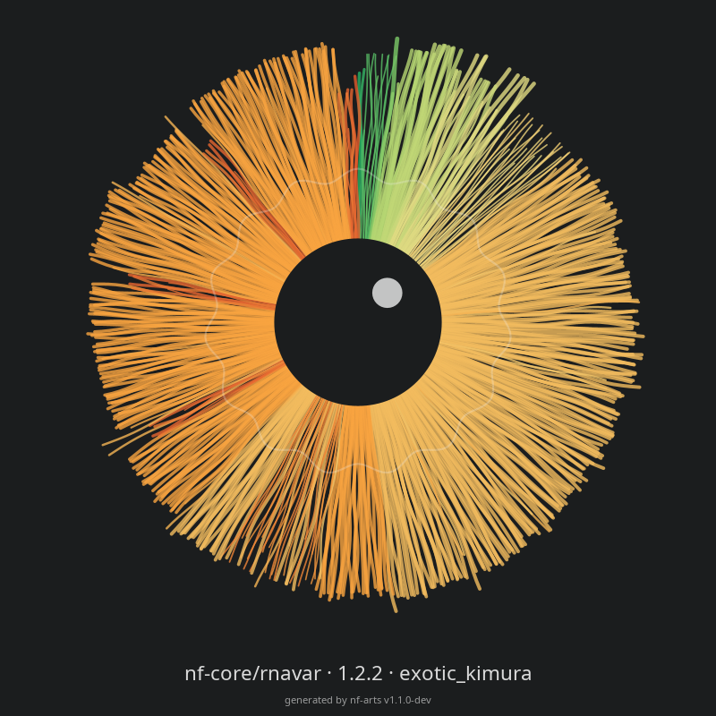
More runs
nf-core megatests, rendered from their trace files.

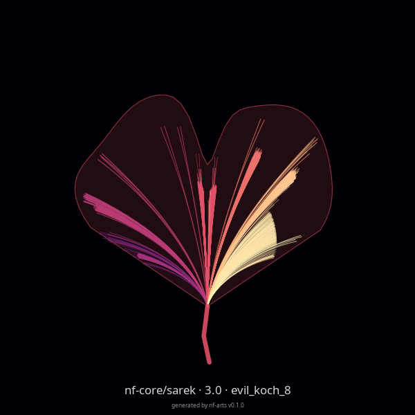

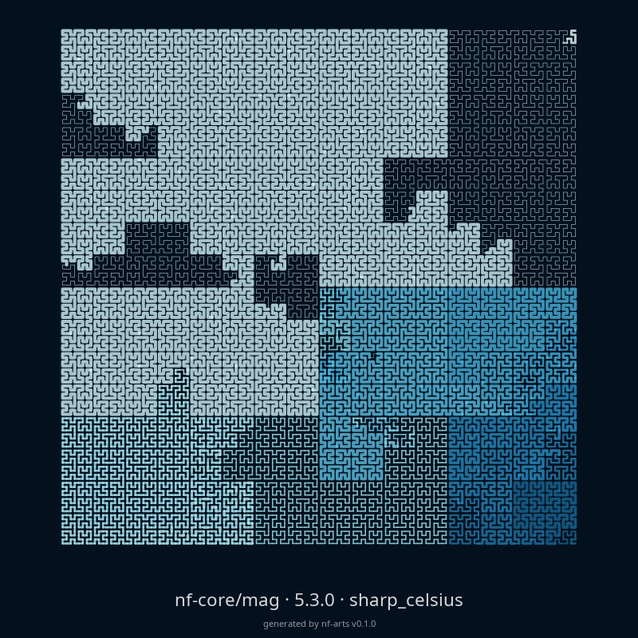

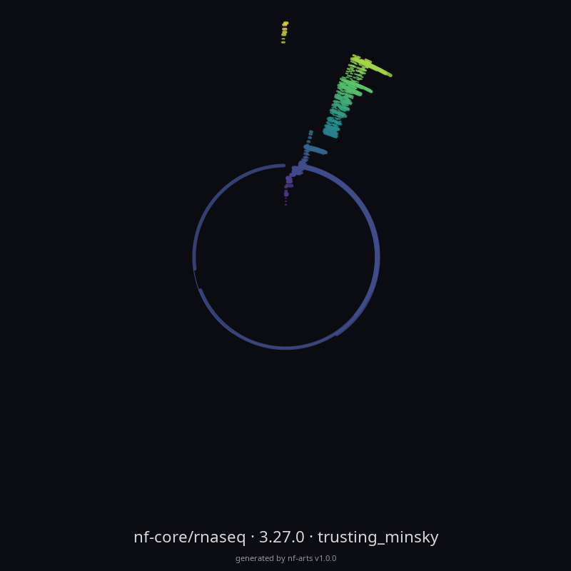

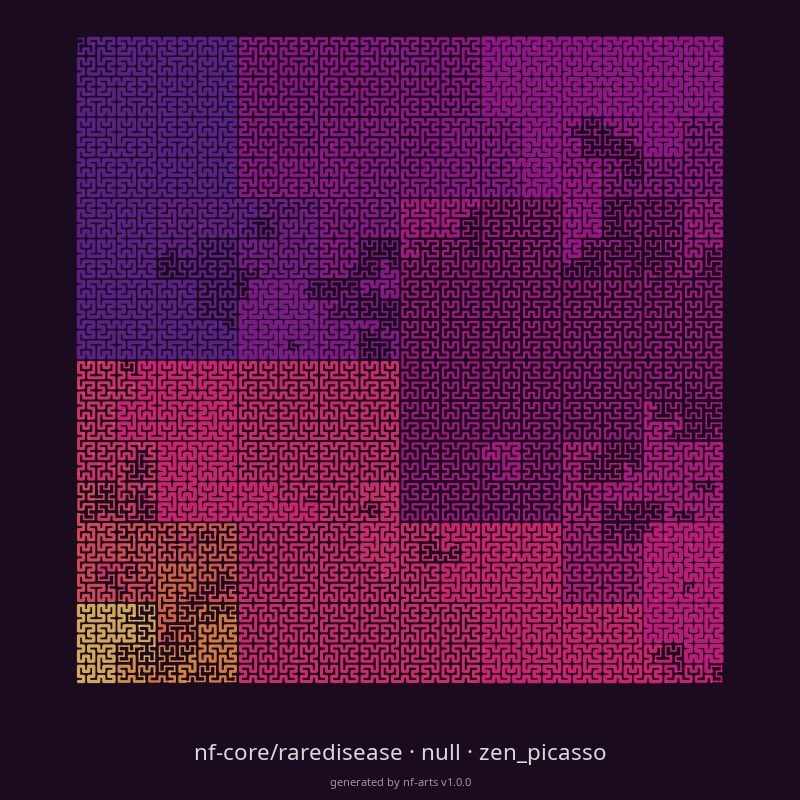

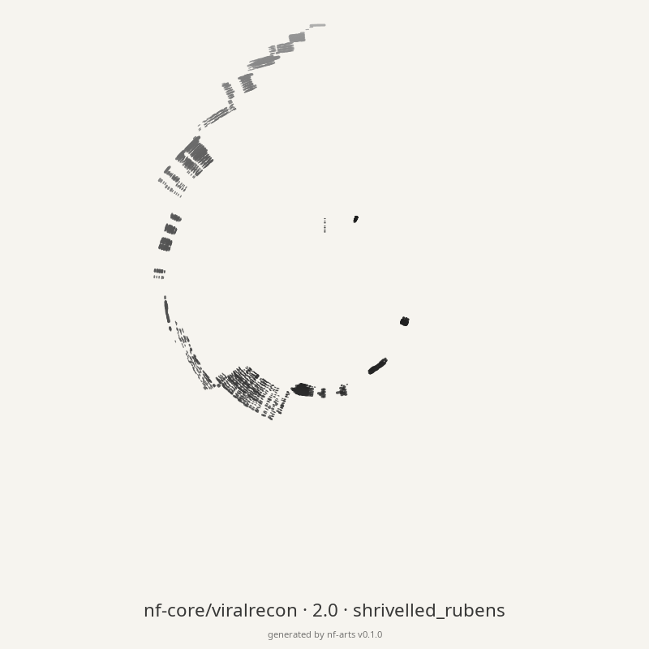

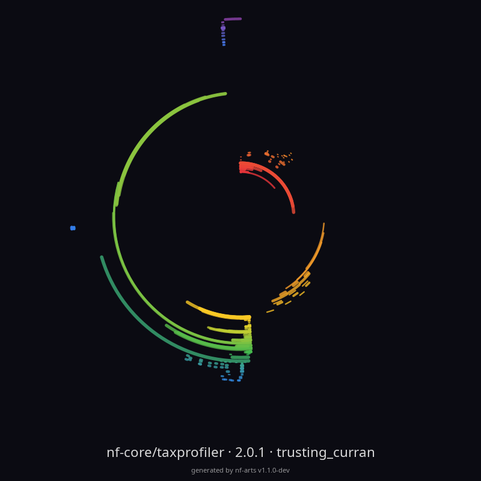

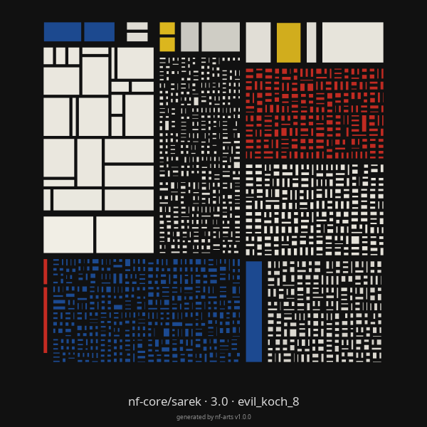

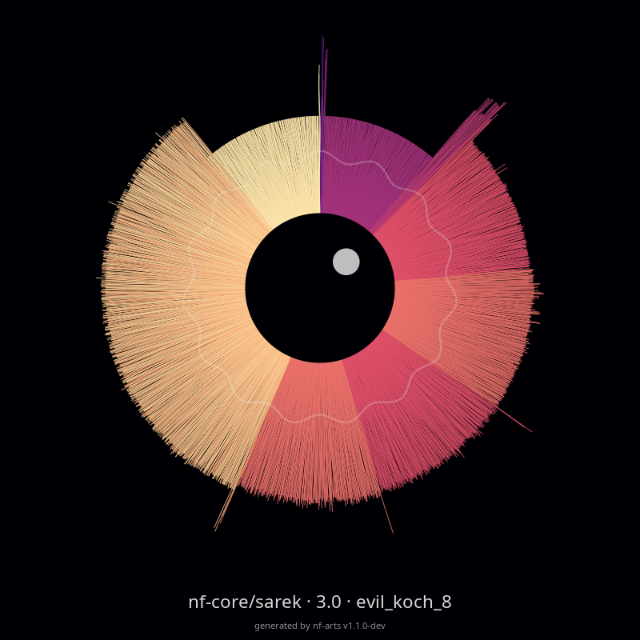